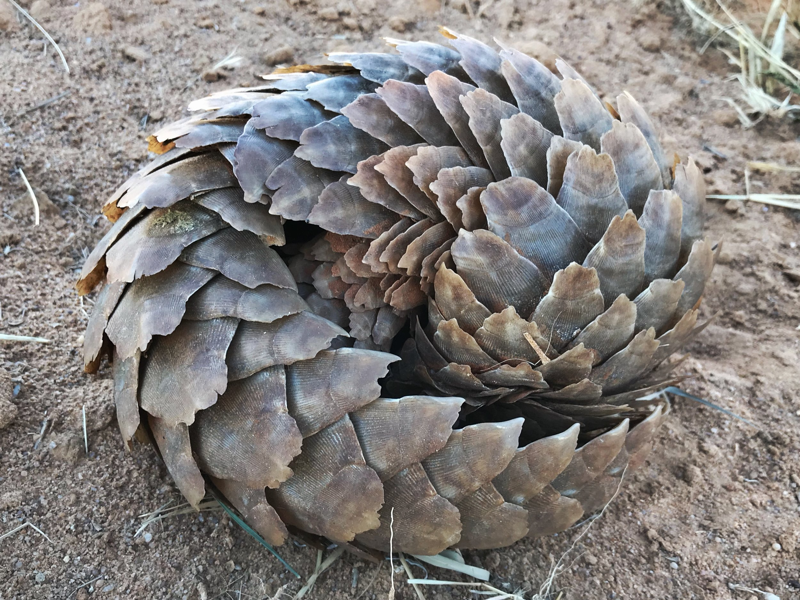
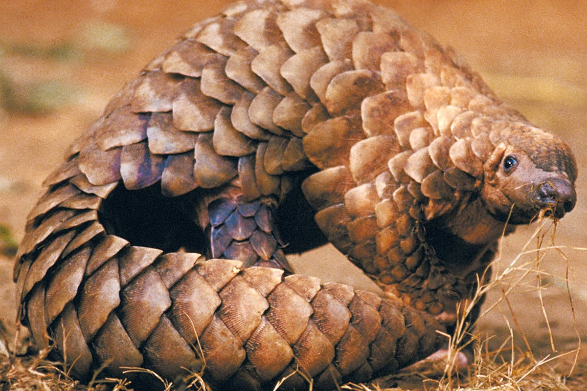
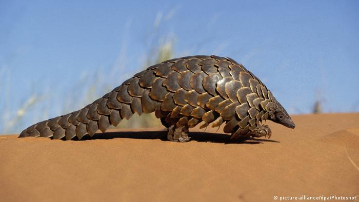

Pangolins, sometimes known as scaly anteaters, are mammals of the order Pholidota (/fɒlɪˈdoʊtə/, from Ancient Greek ϕολιδωτός – "clad in scales"). The one extant family, the Manidae, has three genera: Manis, Phataginus, and Smutsia. Manis comprises the four species found in Asia, while Phataginus and Smutsia include two species each, all found in sub-Saharan Africa. These species range in size from 30 to 100 cm (12 to 39 in). A number of extinct pangolin species are also known.
Pangolins have large, protective keratin scales, similar in material to fingernails and toenails, covering their skin; they are the only known mammals with this feature. They live in hollow trees or burrows, depending on the species. Pangolins are nocturnal, and their diet consists of mainly ants and termites, which they capture using their long tongues. They tend to be solitary animals, meeting only to mate and produce a litter of one to three offspring, which they raise for about two years.
Pangolins are threatened by poaching (for their meat and scales, which are used in traditional medicine) and heavy deforestation of their natural habitats, and they are the most trafficked mammals in the world. As of January 2020, there are eight species of pangolin whose conservation status is listed in the threatened tier. Three (Manis culionensis, M. pentadactyla and M. javanica) are critically endangered, three (Phataginus tricuspis, Manis crassicaudata and Smutsia gigantea) are endangered and two (Phataginus tetradactyla and Smutsia temminckii) are vulnerable on the Red List of Threatened Species of the International Union for Conservation of Nature.
